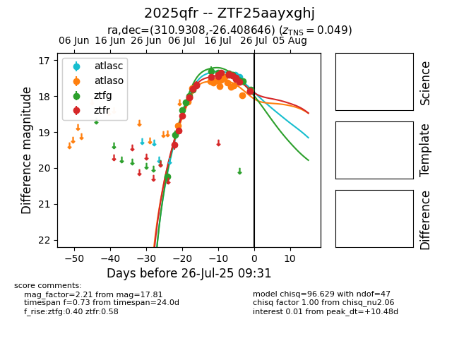

Target 2025qfr at 2025-07-26 09:31, see:
FINK: fink-portal.org/2025qfr
Lasair: lasair-ztf.lsst.ac.uk/objects/2025qfr
ALeRCE: alerce.online/object/2025qfr
TNS: wis-tns.org/object/2025qfr
YSE: ziggy.ucolick.org/yse/transient_detail/2025qfr
alt names
ZTF25aayxghj (ztf,fink)
2025qfr (tns,yse)
coordinates:
equatorial (ra, dec) = (310.9308,-26.40865)
galactic (l, b) = (18.4810,-35.30335)
photometry
last atlasc=17.46, atlaso=17.98, ztfg=17.81, ztfr=17.86
2 atlasc, 13 atlaso, 16 ztfg, 20 ztfr detections
